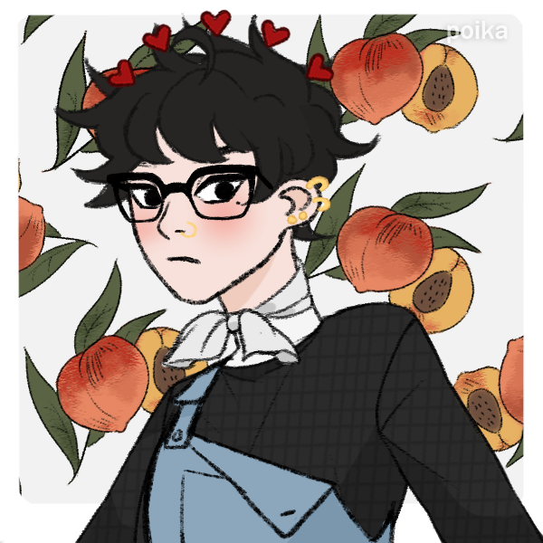

¡Bienvenido! Esta es mi presentación del año 2021 en Programación, un gusto!

¡Voy a comenzar presentadome!
Mi nombre es Alan Medina... Tengo un segundo nombre el cual es Gabriel, pero eso ahorita no importa tanto porque en el campus aparezco como lo primero dicho anteriormente jaja.
Esta es mi primera página web, voy a intentar ponerle el mayor esmero posible y ver que tal el resultado f i n a l.
Un poquitito sobre mí:
Tengo 21 años, actualmente estoy en la carrera de Producción de videojuegos y Entretenimiento Digital.
Nací el 3 de Marzo, soy de piscis, dato innecesario, llorar es mi tercer nombre.
Desde muy chico me ha encantado el mundo de los videojuegos... Ahora juego menos pero porque desarrollé una tibiedad de querer jugar acompañado, entonces si estoy solo soy un inutíl, jaja.
Siempre desde muy chiquito me gustó dibujar, hasta día de hoy lo hago como hobby, aunque cuando hablamos de... anatomía... no vas a querer verme dibujar músculos porque los hago como pedazos de coco.
Hasta los 6 años fui ambidiestro, de eso nomás me quedó secuelas y algunas cosas las hago con la izquierda y otras con la derecha. Psst... si, escribo con la diestra.
Le enseño a cuidar plantas a mi novia... se le siguen secando, todo el tiempo.
Un poco de mis gustos sobre videojuegos y música:
Jamás serví para los juegos de terror, pero sin embargo me fascinan y disfruto de jugarlos...mientras no me agarre un infarto.
Escucho muchisimos géneros músicales, puedo arrancar desde pop, rock, rock nacional, rap, el flaco spinetta, charly y siempre estoy abierto a escuchar todo tipo de género nuevo que me presenten o encuentre.
Actualmente y los últimos años eh jugado FPS, más que nada Apex Legends, CSGO y un poquito de Valorant.
Hasta acá llegó la presentación, el toque final está en darle el cierre en letra italica, jaja.